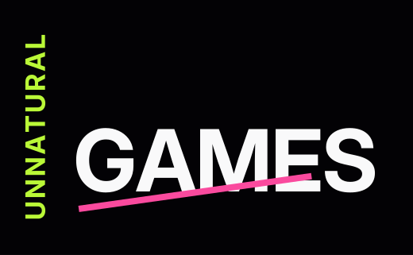
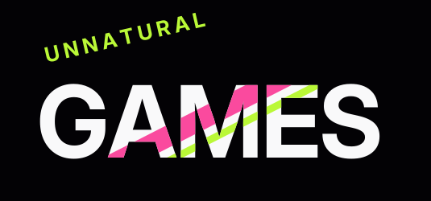
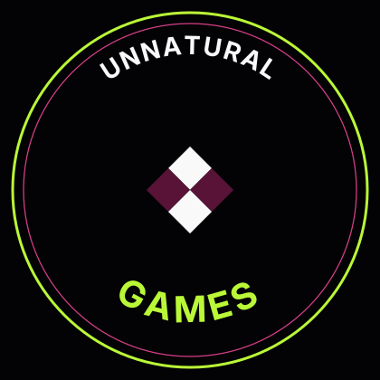
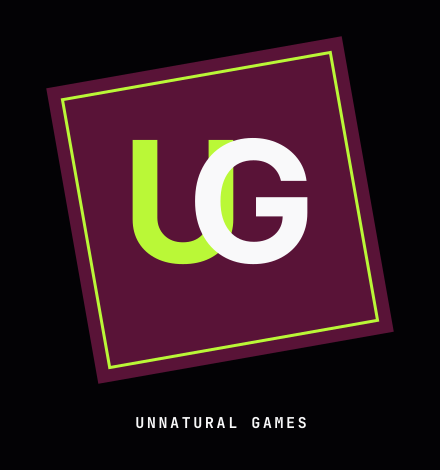
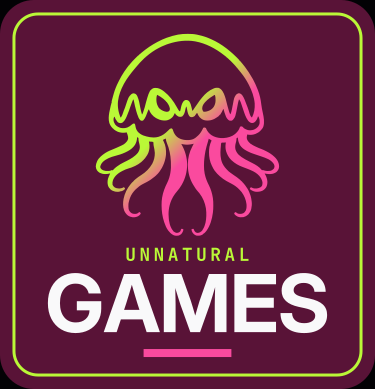

Games logos
Fifteen marks for Unnatural Games. They use the club palette and Inter Display / JetBrains Mono, and they leave the club wordmark alone: no stacked UNNATURAL / INTELLIGENCE, and no cyan-and-pink offset ghost. Crest, swim, overlap, quad, and badge put the jellyfish in the mark. The others try a different angle, cut, or silhouette.
Outlined SVGs are in the vector kit under lockups/games-*.svg and copied into assets/logos/. Posters
-

1 · Lean −16° shear shared by the word and the lime slab. GAMES is extended. SVG · PNG -

2 · Spine UNNATURAL reads up the left edge. The pink rule under GAMES sits at −8°. SVG · PNG -

3 · Stripe UNNATURAL at −13°. Pink and lime bands at −27°, clipped inside the letters. SVG · PNG -

4 · Seal Type on two arcs. A 2×2 board turned 45° in the middle. SVG · PNG -

5 · Slice The cap of GAMES steps up and turns lime. The whole mark sits at −9°. SVG · PNG -

6 · Steps Each letter climbs onto the next block. Lime, pink, cyan, olive, paper. SVG · PNG -

7 · Cross UNNATURAL at −16°, GAMES at +14°, and a pink and lime X in the gap. SVG · PNG -

8 · Monogram UG locked together on a wine plate tipped −10°. SVG · PNG -

9 · Fan Olive, pink, and paper copies of GAMES open from the left like a hand of cards. SVG · PNG -

10 · Ticket A pink stub with UG, a punched perforation, then GAMES on ink. SVG · PNG -

11 · Crest Gradient jellyfish over a lime and pink divider, then the name. SVG · PNG -

12 · Swim The jellyfish tips −16° and swims beside GAMES. A pink bar grounds the word. SVG · PNG -

13 · Overlap The jellyfish perches on the S. Tentacles cross the cap; the word stays readable. SVG · PNG -

14 · Quad Four jellyfish in lime, pink, cyan, and paper, with GAMES centered underneath. SVG · PNG -

15 · Badge A rounded wine plate with a lime keyline. Gradient jellyfish, then the name. SVG · PNG